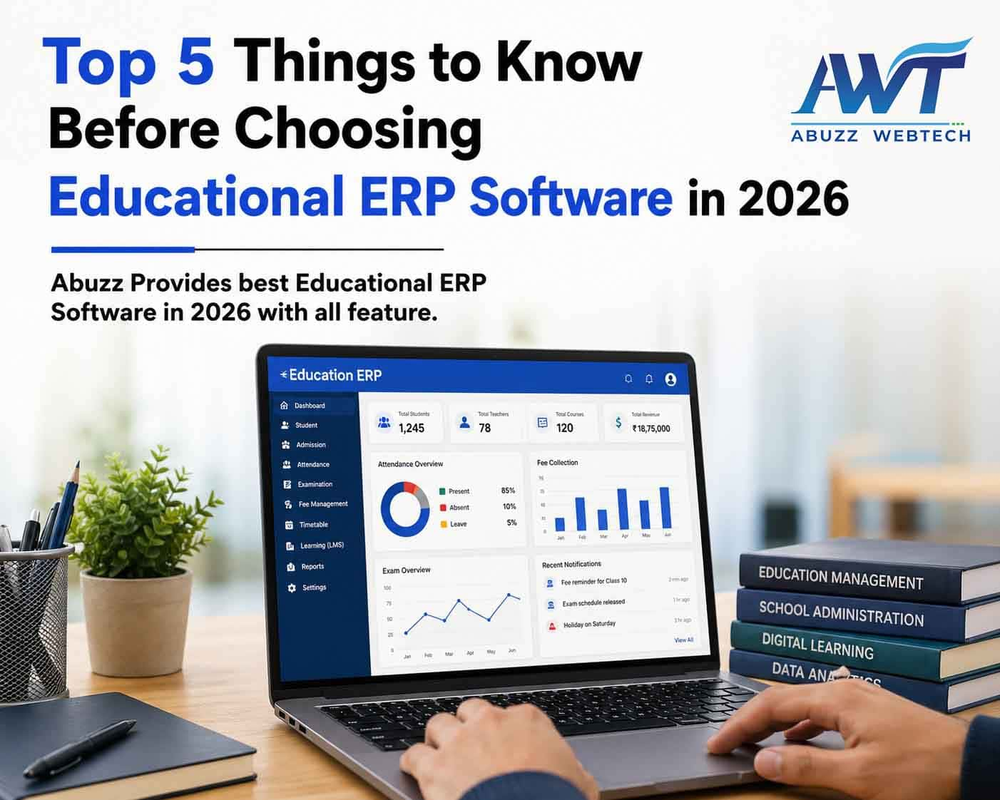

28 April 2026
Top 5 Things to Know Before Choosing Educational ERP Software in 2026
In today’s evolving education sector, institutions are rapidly adopting digital solutions to manage academics, administration, and communication efficiently. An Educational ERP system helps streamline all operations student data, exams, fees, and reporting into one centralized platform.
With multiple options available in 2026, selecting the right ERP requires understanding key factors that impact long-term performance and scalability.
1. Cloud-Based & Mobile Accessibility
A modern ERP should be cloud-based, allowing access anytime and anywhere. This is essential for hybrid learning environments where teachers, students, and parents need real-time updates.
Mobile accessibility further enhances usability by enabling quick access to attendance, assignments, and reports. Many advanced ERP solutions, including platforms like Abuzz, are designed to keep all stakeholders connected through seamless cloud and mobile access.
2. All-in-One System with Modular Flexibility
Every institution has unique requirements, so an ERP system should offer both comprehensive features and flexible modules.
Key Modules to Consider:
| Module | Purpose |
|---|---|
| Student Management | Manage complete student lifecycle |
| Fee Management | Automate fee collection |
| Examination System | Handle exams & results |
| LMS Integration | Support online learning |
| RFID Attendance | Automate attendance tracking |
Instead of managing multiple tools, institutions benefit more from integrated systems where modules can be added or scaled as needed—something modern ERP platforms like Abuzz are built to support.
3. Data Security & Privacy
Educational institutions handle sensitive data, making security a top priority. A reliable ERP should include encryption, secure access controls, and regular backups.
Since ERP systems centralize all data, maintaining strong security protocols becomes essential. Well-designed platforms follow strict data protection practices to ensure institutional data remains safe and compliant.
4. Ease of Use & User Experience
An ERP system must be easy to use for teachers, administrators, and parents. Complicated systems reduce adoption and efficiency.
- Simple dashboards
- Easy navigation
- Quick onboarding
User-friendly platforms help institutions adopt digital systems faster without requiring extensive technical training.
5. Integration, Automation & Scalability
The future of education lies in connected systems. ERP software should integrate with tools like LMS, On Screen Marking (OSM), payment gateways, and RFID systems.
Automation reduces manual work by handling attendance, fee processing, and reporting efficiently. As institutions grow, the ERP should scale without affecting performance.
Quick Comparison Table
| Feature | Basic ERP | Advanced ERP | Modern ERP (e.g., Abuzz) |
|---|---|---|---|
| Cloud Access | Limited | Yes | ✔ Full |
| Mobile Access | No | Partial | ✔ Yes |
| LMS Integration | No | Yes | ✔ Integrated |
| OSM Support | No | Limited | ✔ Available |
| RFID Attendance | No | Optional | ✔ Integrated |
| Scalability | Low | Medium | ✔ High |
Why Choosing the Right ERP Matters
Without a proper ERP system, institutions may face data inconsistencies, communication gaps, and increased manual workload.
Conclusion
Choosing the right Educational ERP Software in 2026 is a critical decision for any institution.
A complete solution like Abuzz ERP Software not only simplifies operations but also supports long-term growth, compliance, and digital transformation.
Looking for the best ERP solution for your institution? Contact Abuzz WebTech today and book a free demo.
Frequently Asked Questions
1. How do I choose the right Educational ERP software for my institution?
Choosing the right ERP depends on your institution’s size, required modules, and future scalability. You should evaluate factors like cloud access, integration capabilities, ease of use, and data security. Many institutions prefer all-in-one platforms that can handle academics, exams, and administration in one place for better efficiency.
2. What are the most important features to check before buying ERP software in 2026?
KKey features include student management, admission automation, exam and result processing, fee management, LMS integration, and mobile access. Advanced systems also support RFID attendance and On Screen Marking, which help reduce manual work and improve accuracy.
3. Is cloud-based ERP better than on-premise software?
Yes, cloud-based ERP is generally preferred because it allows real-time access from anywhere, requires no heavy infrastructure, and is easier to maintain. It also supports remote learning environments and ensures better scalability compared to traditional systems.
4. Can ERP software be customized?
Most modern ERP systems offer modular and customizable features, allowing institutions to choose only the modules they need. This flexibility ensures that the software can adapt to different workflows and grow along with the institution.
5. Why is integration important?
Integration allows the ERP system to connect with tools like LMS, payment gateways, RFID systems, and evaluation platforms. This ensures smooth data flow, reduces duplication, and helps institutions manage all operations from a single platform efficiently.